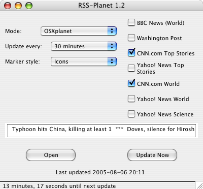

RSS-Planet
RSS-Planet is a newsmapper, i.e. a custom marker file generator for xplanet and OSXplanet which uses RSS feeds from news websites to plot the current headlines on a world map.
By default, BBC News, Yahoo! News, CNN.com and the Washington Post are supported, but other feeds with articles that include place names should work as well.
Download RSS-Planet 1.4 here [100 kB] (Python 2.3 or above, xplanet 1.0 or above or OSXplanet required)
You can also browse the current repository at GitHub and obtain the source code by using the git command git clone git://github.com/mdoege/RSS-Planet.git
Note: The Python Imaging Library needs to be installed for favicon display to work. Circles are used by default if PIL is not found. To use the GUI, wxPython must be installed.
USAGE: Unpack the archive, cd into the directory, and run "./rssplanet.py &". It will take a few minutes before the first annotated map appears. Alternatively, you can run the program via its GUI: "./planetgui.py" (or "pythonw planetgui.py" on the Mac).
The script will start xplanet and then poll the configured sites regularly. For advanced configuration, see the first few lines of rssplanet.py, where some global variables such as the refresh interval are set.
Command line options:
- -w web page output (generate HTML with JavaScript popups)
- -s standalone mode (just generate the marker file, don't start xplanet)
- -x update only once and then exit (useful when called from a cron job)
- -v verbose mode (print headlines as they are fetched)
Please also read these installation instructions for KDE, Gnome, and OS X.
Other settings can be customized by editing rssplanet.py.
NEW IN THIS VERSION: RSS-Planet now has a standalone mode where it only runs once when it is called, creates the marker file, and then exits. This is useful for easier integration with an existing xplanet setup.
NEW IN VERSION 1.3: RSS-Planet can now alternatively output HTML with popup captions. If the command line option --web is used, a page called rssplanet.html is generated in the web_path directory. Rendering of the background image no longer requires xplanet or OSXplanet in this mode, only the day and night images specified in renderplanet.py. Normally, these will be earth.jpg and night.jpg, which are available from from the xplanet/OSxplanet distribtution.
NEW IN VERSION 1.2: RSS-Planet now includes an optional wxPython-based GUI, which can be used to toggle feeds on and off and adjust the refresh interval. Other new features are a news ticker and a button to open a story in the default web browser.

The GUI (on Mac OS X).
NEW IN VERSION 1.1: Using the web site favicons as markers, better support for the BBC and WP feeds, presets, varying circle diameter based on number of dropped stories, optional removal of vowels from headlines to allow longer titles, maximum number of headlines per feed (defaults to 10).
Favicons as markers on the map.
XPLANET PRESETS (with corresponding command line options in parentheses):
The Americas (--us)
America–Europe (--ameu)
Europe–Asia (--euas)
Asia–Australia (--asau)
Eastern and Western hemispheres
(--hemi)
Northern Hemisphere (--nh)
LICENSE: This program is distributed under the GPL.